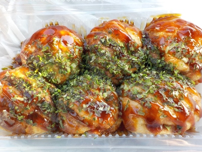

たまたま近くを通ったので、たこ焼きの店じゅう太郎でたこ焼き買いました。
ナフコでちょっと買い物しようって行ったら、近くにたこ焼き屋さんがありました。

たこ焼き400円です。ふっくら柔らかで中とろとろでした。
美味しかったです。また近くを通ることがあったら寄って食べようと思います。
今日はいいお店が見つけれて良かった。
島根県雲南市木次町下熊谷1545-1
ナフコでちょっと買い物しようって行ったら、近くにたこ焼き屋さんがありました。

たこ焼き400円です。ふっくら柔らかで中とろとろでした。
美味しかったです。また近くを通ることがあったら寄って食べようと思います。
今日はいいお店が見つけれて良かった。